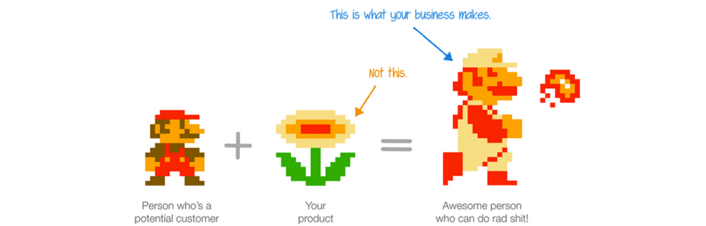

People don't buy products; they buy better version of themselves
ဘာကြောင့် ဝယ်သုံးတာလဲ ? ကျွန်တော်တို့ရဲ့ product ဟာ သုံးစွဲသူကို ဘယ်လိုအကျိုးပြုသလဲ ?

ကျွန်တော်တို့ နေ့စဉ် အသုံးပြုတဲ့ app ထဲမှာ ဝယ်သုံးဖြစ်တဲ့ App တွေ ဘယ်နှစ်ခုလောက်ပါသလဲ ? ဘာကြောင့် ဝယ်သုံးရသလဲ ? ဘာကြောင့် အသုံးပြုရတာလဲ ? product အသစ်ထွက်ရင် လက်ရှိ အဆင်ပြေနေတဲ့ ဝယ်ထားတဲ့ product ကို စွန့်ပြီး အသစ်ဝယ်သုံးဖြစ်လား ? ကျွန်တော်တို့ ကိုယ်ပိုင် product ဖန်တီးတဲ့ အခါမှာလည်း အဲဒီလို မေးခွန်း ကိုယ့်ဘာသာကိုယ် ပြန်မေးဖြစ်တယ်။ ကျွန်တော် နေ့တိုင်း မသုံးဖြစ်ဘူးဆိုရင် ဘာလို့ သီးသန့် ထုတ်ပြီး ရောင်းတော့မှာလဲ ? ကျွန်တော် လက်ရှိ ရှိနေတဲ့ အခြား products တွေထက် သာလွန်အောင် မဖန်တီးနိုင်ရင် ဘာလို့ ရောင်းတော့မှာလဲ ? ကျွန်တော်တို့ ထုတ်မယ့် product ကို ဘာကြောင့် ဝယ်သုံးသင့်တာလဲ။ ကျွန်တော် အပါအဝင် ဘယ် user မှာ product ကို ဝယ်ကြတာ မဟုတ်ပါဘူး။ ကျွန်တော်တို့ရဲ့ skills , users ရဲ့ လက်ရှိ skills တွေကို မြှင့် တင်ပေးဖို့ အတွက် လက်နက် တပ်ဆင် တဲ့ သဘောပါပဲ။ ပိုကောင်းတဲ့ ပိုတော်တဲ့ လူတစ်ယောက် ဖြစ်လာအောင် product ကို ဝယ်လိုက်တာပါ။ တနည်းပြောရင်
Mario (user) + Fire Flower (product) = Red Shirt Mario with Fire Ball
အခု နောက်ပိုင်း app တွေ ကို ဝယ်သုံးဖြစ်တယ်။ လွယ်လွယ် ကူကူ ဝယ်လို့ ရတဲ့ အခြေအနေကြာင့်လည်း ပါတယ်။ Tweet Bot , Airmail , Sketch , Pixelmator တွေရဲ့ စျေးက မသေးလှပါဘူး။ သို့ပေမယ့် ဝယ်ပြီး နောက်ပိုင်း နေ့စဉ် နီးပါး အသုံးပြုဖြစ်တဲ့ အတွက် တန်တယ်လို့ ဆိုရမယ်။ Sketch နဲ့ Pixelmator ကြောင့် photoshop လုံးဝ မလိုတော့ပါဘူး။ Photoshop ကို ဘာလို့ သုံးကြတာလဲ ဆိုတော့ photo editing , design စတာတွေ အတွက် သုံးကြတယ်။ ဝယ်သုံးကြတဲ့ သူတွေကလည်း သူတို့ရဲ့ နေ့စဉ် လုပ်ငန်းအတွက် တကယ့်ကို လိုအပ်လို့ ဝယ်သုံးကြတယ်။ ဒီလိုပဲ ကျွန်တော့် အတွက် sketch , pixelmator တို့ဟာ နေ့စဉ် နီးပါး အသုံးပြုဖြစ်တဲ့ အတွက် ဝယ်သုံးကြတယ်။ Free ရတဲ့ တခြား app တွေရှိပေမယ့် photoshop ကို မယှဉ် နိုင်ပါဘူး။ ဒီလိုပါပဲ sketch တစ်ခုတည်း ဖြစ်ဖြစ် pixelmator တစ်ခုတည်း ဖြစ်ဖြစ် phtoshop ရဲ့ quality ကို မမှီပါဘူး။ သို့ပေမယ့် ၂ ခု ပေါင်းလိုက်ရင်တော့ photoshop လောက် နီးပါး ရပါတယ်။ ဒါကြောင့် တန်တယ်လို့ ခံစားရတယ်။ အပေါ်မှာ ပြောသလို Mario example နဲ့ ပြရရင်
ကျွန်တော် + (sketch + pixelmator) = App Design And Mockup
ကျွန်တော် sketch က ဘယ်သူထုတ်လို့ pixelmator က ဘယ်သူထုတ်လို့ ဘာတွေ ကောင်းလို့ ဝယ်သုံးတာ မဟုတ်ပါဘူး။ ကျွန်တော့် အတွက် အသုံးလိုလို့ ဝယ်သုံးတယ်။ Sketch ကြောင့် ဘယ်သူ့ အကူအညီမှ မလိုပဲ ကျွန်တော် ကိုယ့်ဘာသာကိုယ် App Design တွေ Mockup တွေ ဖန်တီးနိုင်လာပါတယ်။ Photoshop ဘယ်လောက်ကောင်းကောင်း ကျွန်တော် မသုံးတဲ့ feature တွေ အများကြီးပါတယ်။ ဝယ်သုံးဖြစ်တဲ့ app ဟာ နေ့စဉ် သုံးမယ်ဆိုရင် တန်ပါတယ်။ ဥပမာ $10 ပေးဝယ်ရတဲ့ app ဟာ 10 ရက်လောက် သုံးပြီးသွားရင် ၁ ရက် မှ $1 ပဲ ကျပါလိမ့်မယ်။ ၁ လ လောက် သုံးပြီးသွားရင်တော့ ၁ ရက်မှ 0.33 ပေးရတာ ဖြစ်သွားပါပြီ။ ဒါ့အပြင် အဲဒီ app ကြောင့် ကိုယ့်အလုပ်တွေ အများကြီး သက်သာသွားမယ် အဆင်ပြေသွားမယ်ဆိုရင်တော့ $10 ဆိုတာ အတော့်ကို တန်တယ်ဖြစ်သွားပြီ။ အဲလို တွက်ကြည့်လိုက်ရင် တန်တယ်ဆိုတာကို မြင်ရပါလိမ့်မယ်။
ကျွန်တော် Boxer ကို သုံးပြီးနောက်ပိုင်းမှာ အခြား mail app တွေ ပြောင်း မသုံးဖြစ်တော့ဘူး။ ဒီလိုပဲ mac မှာလည်း mailer ကို ဝယ်သုံးပြီးနောက်ပိုင်း အခြား mac အတွက် mail client တွေ ထပ်ရှာပြီး မသုံးဖြစ်တော့ဘူး။ ကျွန်တော် အပါအဝင် သုံးစွဲသူ အများစုဟာ product တစ်ခုကနေ နောက်ထပ် product တစ်ခု ကိုပြောင်းဖို့ ရန် အတော် ကို ခက်တယ်။ နောက် product ဟာ လက်ရှိ product ထက် ဘာတွေ ပိုကောင်းလဲ ? ဘာကြောင့် ပြောင်းသင့်တယ် ဆိုတဲ့ အကြောင်း ပြချက် ကောင်းကောင်း ရှိမှသာ ပြောင်းကြတယ်။
ကိုယ်တိုင် product ဖန်တီးရာမှာလည်း ကိုယ်တိုင် သုံးစွဲသူ ဖြစ်တဲ့ အခါ ကိုယ့်လိုအပ်ချက်ပေါ်မူတည်ပြီးတော့ product တွေကို ထုတ်ဖြစ်တယ်။ ကျွန်တော်တို့ရဲ့ product တွေကို ကျွန်တော်တို့ ကိုယ်တိုင် အသုံးမပြုဖြစ်ဘူးဆိုရင်တော့ တစ်ခုခု လိုအပ်ချက်ရှိနေတာ သေချာနေပါပြီ။ Product တစ်ခု ထွက်တဲ့ အခါမှာ ကိုယ်တိုင်က ပထမဆုံး သုံးစွဲသူပါပဲ။ ဘယ်သူမှ မသုံးရသေးခင် စတင် ဖန်တီးတွေက ဦးစွာ အသုံးပြုကြသူတွေပါ။ တကယ်လို့ ဖန်တီးသူ ကိုယ်တိုင် မကြိုက်တဲ့ product ကို ဘာကြောင့် ရောင်းချ နေမှာလဲ ။ သုံးစွဲသူတွေဟာ product ကို ဝယ်သုံးနေကြတာ မဟုတ်ပါဘူး။
ကျွန်တော် ယုံကြည်တာကတော့ ကျွန်တော်တို့တွေရဲ့ product ဟာ သုံးစွဲသူတွေကို အဆင်ပြေအောင် ဖန်တီးပေးနိုင်မယ်ဆိုရင် သုံးစွဲသူတွေ ကိုယ်တိုင် ဝယ်သုံးကြမှာပဲ။ ကျွန်တော်တို့ရဲ့ proudct ဟာ fire flower မဟုတ်ပါဘူး။ fire ball ရှိတဲ့ mario ဖြစ်အောင် user တွေကို ဖန်တီးပေးဖို့ပါ။